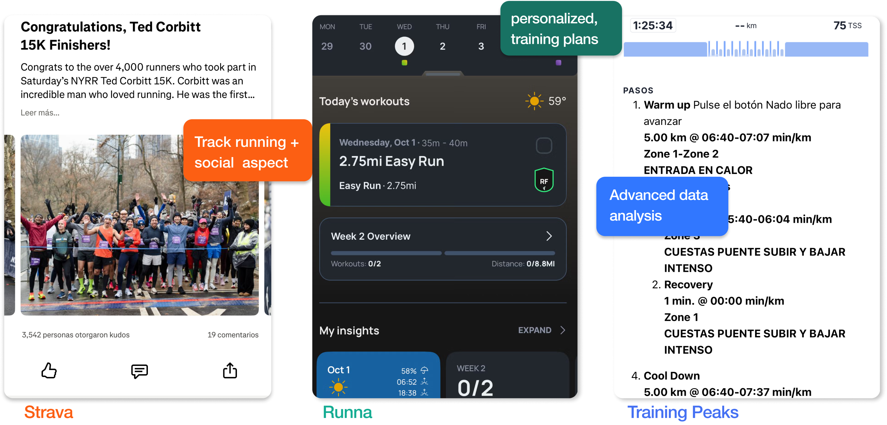
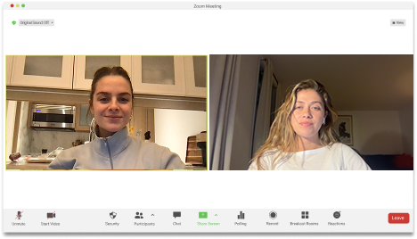

The objective of this project was to introduce a new feature to the Nike Run App
that increases user motivation — encouraging runners to engage more with the
platform and with the running practice
DesignerMaika Sacerdote
Project Timeline6.5 weeks
Year2025
Project TypeUX/UI
ToolsFigma, Mid-journey, Illustrator, Photoshop
Why Nike Run App?
I decided to work with Nike Run because it is the App I use to track my runs
and because I love Nike and Running.
Competitive Audit
I conducted a competitive audit to understand the current landscape of running apps
and identify where NRC stands in relation to its closest competitors.

How often do you run, and what distances do you?
What do you feel is missing that would help you enjoy more running?
Do you follow any training plan or schedule?

What apps or devices do you use to track your runs?
Key Moment
I stepped into this article that talked about the influence of music in running.
"Music that syncs with your running pace can help you find your rhythm and keep it consistent."
"Music has an undeniable power to influence our emotions, mindset, and even physical performance."
Connection between the BPM of music and the BPM of your heart rate in different running zones.
By aligning music with effort level, you can push through challenges or maintain a steady rhythm with greater ease.
100–120Warm-Up & Recovery
120–130Endurance Runs
130–150Aerobic Runs
150–170Tempo & Threshold Runs
170+Intervals & Sprints
System Map
Before designing, I had to understand the system. I mapped the entire Nike Run App
to find where music could live without breaking the existing experience.
System Map
3 functions of this feature
01
Create / Suggest Playlists
Curate and suggest running playlists matched to your workout type and intensity.
02
Visualize Music Insights
See how every track synced to your rhythm. Your cadence, pace and BPM, broken down song by song.
03
Inform About Music
Connection between BPM ranges and different running zones explained in context.
Music that moves at your rhythm.
See how your music performed.
Start a RunGuided RunsMy Music
Plans / Guided Run
Plans / Non-Guided Run
My Music
My Playlists
Create a Playlist
HOTGIRL RUN
Find a Playlist
Music Details
140max BPM
90min
170max BPM
100min
Image Creation
I used AI tools to generate campaign imagery that matched Nike's visual language —
cinematic night running, warm gradient skies, and athletes visibly connected to music.
Design Documentation
A full design system created specifically for the Nike Run Music feature —
components, BPM ranges, and data visualizations all documented and ready to build.